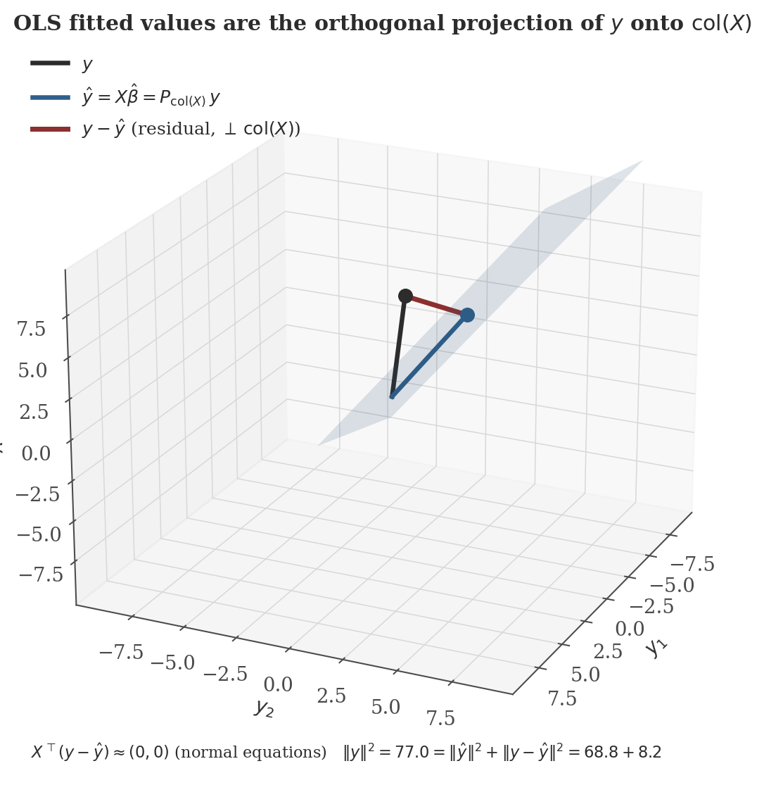
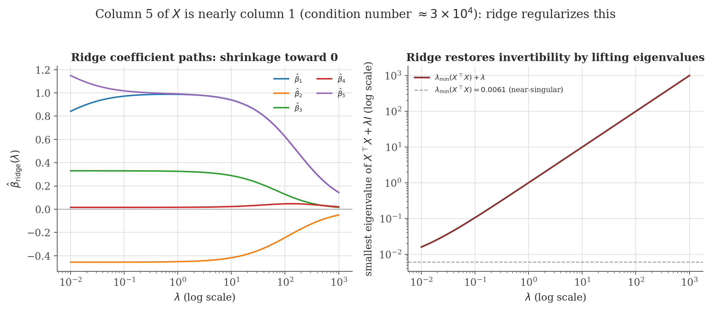

Regression Methods
Disclaimer: These are my personal notes compiled for my own reference and learning. They may contain errors, incomplete information, or personal interpretations. While I strive for accuracy, these notes are not peer-reviewed and should not be considered authoritative sources. Please consult official textbooks, research papers, or other reliable sources for academic or professional purposes.
Contents
- The linear model and its assumptions
- OLS as orthogonal projection
- The Gauss–Markov theorem
- Finite-sample vs. asymptotic inference
- Heteroscedasticity and robust standard errors
- Multicollinearity as a rank condition
- Ridge regression as penalized projection
- Model selection and diagnostics
- Computation
- Common pitfalls
- Connections
- References
1. The linear model and its assumptions
The model is $y = X\beta + \varepsilon$, with $y\in\mathbb{R}^n$, $X\in\mathbb{R}^{n\times k}$ (the design matrix, columns are regressors including a constant), $\beta\in\mathbb{R}^k$ the parameters, and $\varepsilon$ an unobserved error. The estimation problem this note is built around asks: given only $X$ and $y$, what is the best linear (in $y$) estimate of $\beta$? Three assumptions matter for everything below, and it is worth being explicit about exactly where each one is used rather than bundling them together:
- Full column rank of $X$ — needed for $\hat\beta$ to be uniquely defined at all (Section 2).
- Exogeneity, $E[\varepsilon\mid X]=0$ — needed for $\hat\beta$ to be unbiased (Section 3).
- Homoscedasticity, $\mathrm{Var}(\varepsilon\mid X)=\sigma^2 I$ — needed specifically for $\hat\beta$ to be the minimum-variance linear unbiased estimator (Section 3); relaxing it does not break unbiasedness, only optimality and the usual standard error formula (Section 5).
2. OLS as orthogonal projection
The ordinary least squares estimator minimizes $\|y-X\beta\|^2$ over $\beta\in\mathbb{R}^k$. Written this way, the problem is exactly the best-approximation problem solved in the vector spaces note (Section 7): find the point of the subspace $W=\mathrm{col}(X)=\{X\beta:\beta\in\mathbb{R}^k\}$ closest to $y$ in Euclidean norm.
If $X$ has full column rank, the unique minimizer of $\|y-X\beta\|^2$ is $\hat\beta = (X^\top X)^{-1}X^\top y$, and the fitted values $\hat y = X\hat\beta$ are exactly $P_{\mathrm{col}(X)}\,y$, the orthogonal projection of $y$ onto $\mathrm{col}(X)$.
This is not merely an alternative derivation to the usual calculus argument (set $\nabla_\beta\|y-X\beta\|^2=-2X^\top(y-X\beta)=0$, which gives the same normal equations) — it is the reason the normal equations take that specific form: they are the orthogonality condition of a projection, not an arbitrary first-order condition. Every downstream fact — the residual's orthogonality to every regressor, the Pythagorean decomposition of total sum of squares, why adding regressors never increases the residual sum of squares — is a restatement of this geometric fact.

3. The Gauss–Markov theorem
Unbiasedness of $\hat\beta$ under exogeneity is immediate: $E[\hat\beta\mid X] = (X^\top X)^{-1}X^\top E[y\mid X] = (X^\top X)^{-1}X^\top X\beta = \beta$. The substantial result is that OLS is not merely unbiased, but optimal among linear unbiased estimators.
Under exogeneity and homoscedasticity, for any other linear unbiased estimator $\tilde\beta=Cy$ of $\beta$, $\mathrm{Var}(\tilde\beta\mid X) - \mathrm{Var}(\hat\beta\mid X)$ is positive semi-definite. OLS is the Best Linear Unbiased Estimator (BLUE).
$DD^\top$ is a Gram matrix, hence positive semi-definite ($v^\top DD^\top v = \|D^\top v\|^2\geq0$ for every $v$), so $\mathrm{Var}(\tilde\beta\mid X)-\mathrm{Var}(\hat\beta\mid X)=\sigma^2DD^\top\succeq0$. ∎
The proof is worth pausing on for what it reveals: every linear unbiased estimator differs from OLS by a term $Dy$ with $DX=0$ — i.e. by something computed from a direction in $y$-space that is invisible to $X$. Adding such a term can never reduce variance (it is uncorrelated noise, from the estimator's point of view, layered on top of the OLS estimator) and can only add to it. Note precisely what Gauss–Markov does not claim: it says nothing about biased estimators (ridge, Section 7, deliberately trades some bias for lower variance) and nothing beyond the class of linear estimators.
4. Finite-sample vs. asymptotic inference
Two distinct routes give a sampling distribution for $\hat\beta$, and it matters which one is actually being used:
- Finite-sample (exact): if, additionally, $\varepsilon\mid X\sim N(0,\sigma^2I)$, then $\hat\beta\mid X$ is exactly $N(\beta, \sigma^2(X^\top X)^{-1})$ for any sample size $n$ — a linear transformation of a Gaussian vector is Gaussian. $t$-tests and $F$-tests based on the exact $t$- and $F$-distributions (using $s^2=\frac{1}{n-k}\|y-X\hat\beta\|^2$ in place of the unknown $\sigma^2$) are then exact for every $n$, not approximations.
- Asymptotic: without normality, $\hat\beta$ is not exactly Gaussian in finite samples, but under standard regularity conditions $\sqrt{n}(\hat\beta-\beta)\xrightarrow{d} N(0,\sigma^2Q^{-1})$ as $n\to\infty$, where $Q=\lim\frac{1}{n}X^\top X$ — a Central Limit Theorem argument applied to $\frac{1}{n}X^\top\varepsilon$, valid only in the limit, and only an approximation at any finite $n$.
Conflating these is a common error: citing "asymptotic normality" to justify treating a small-sample $t$-statistic as exactly $t$-distributed skips a step — the exact result needs the stronger Gaussian-errors assumption, while the CLT-based result is only approximately correct and says nothing about how large $n$ must be for the approximation to be adequate.
5. Heteroscedasticity and robust standard errors
If $\mathrm{Var}(\varepsilon\mid X)=\Omega\neq\sigma^2I$ (heteroscedastic or correlated errors), $\hat\beta$ is still unbiased — unbiasedness in Section 3 only used $E[\varepsilon\mid X]=0$ — but the Gauss–Markov optimality argument breaks (it used $\mathrm{Var}(\varepsilon\mid X)=\sigma^2I$ explicitly to collapse $C\Omega C^\top$ to $\sigma^2CC^\top$), and the standard variance formula $\sigma^2(X^\top X)^{-1}$ is simply wrong: the correct variance is
(Direct substitution: $\hat\beta-\beta=(X^\top X)^{-1}X^\top\varepsilon$, so $\mathrm{Var}(\hat\beta\mid X)=(X^\top X)^{-1}X^\top\,\mathrm{Var}(\varepsilon\mid X)\,X(X^\top X)^{-1}$.) The White / sandwich estimator replaces the unknown $\Omega$ with $\hat\Omega=\mathrm{diag}(\hat\varepsilon_1^2,\ldots,\hat\varepsilon_n^2)$ (squared OLS residuals), giving a consistent estimate of this "sandwich" formula without needing to know the specific form of the heteroscedasticity. This corrects the standard errors used for inference; it does not change $\hat\beta$ itself, which remains the same point estimate under either the homoscedastic or heteroscedastic variance formula.
6. Multicollinearity as a rank condition
"Perfect multicollinearity" — one regressor an exact linear combination of others — means $X$ does not have full column rank, i.e. by the equivalence theorem in the matrices note (Section 5), $X^\top X$ is singular and $\hat\beta=(X^\top X)^{-1}X^\top y$ is not merely poorly estimated — it is undefined, because the normal equations have infinitely many solutions (any $\beta$ on an affine subspace gives the same fitted values, hence the same minimized $\|y-X\beta\|^2$). This is a statement about identification, not estimation precision.
Near-multicollinearity (a small but nonzero smallest eigenvalue of $X^\top X$) does not break identification — $\hat\beta$ is still unique — but Section 3's variance formula $\sigma^2(X^\top X)^{-1}$ blows up in the directions of small eigenvalues, since $(X^\top X)^{-1}$'s eigenvalues are the reciprocals of $X^\top X$'s (a direct consequence of the diagonalization theorem in the eigenvalues note, Section 5): the coefficients on collinear regressors become individually very imprecisely estimated, even though the fit $\hat y$ itself remains stable.
7. Ridge regression as penalized projection
Ridge regression minimizes $\|y-X\beta\|^2+\lambda\|\beta\|^2$ for $\lambda>0$. Setting the gradient to zero: $-2X^\top(y-X\beta)+2\lambda\beta=0 \Rightarrow (X^\top X+\lambda I)\beta = X^\top y$, giving
$X^\top X+\lambda I$ has the same eigenvectors as $X^\top X$ but every eigenvalue shifted up by $\lambda$ (if $X^\top Xv=\mu v$, then $(X^\top X+\lambda I)v=(\mu+\lambda)v$) — so it is invertible for any $\lambda>0$ even when $X^\top X$ itself is singular or near-singular, directly resolving the Section 6 problem at its source rather than merely reporting large standard errors. This is a biased estimator ($E[\hat\beta_{\mathrm{ridge}}\mid X]=(X^\top X+\lambda I)^{-1}X^\top X\beta\neq\beta$ in general — consistent with Gauss–Markov's silence on biased estimators, Section 3) that deliberately trades bias for reduced variance: as $\lambda\to\infty$, $\hat\beta_{\mathrm{ridge}}\to0$ (zero variance, maximal bias); as $\lambda\to0$, it recovers OLS.

8. Model selection and diagnostics
AIC and BIC for comparing regression specifications are the same information criteria derived (with proof of the consistency/efficiency distinction) in the time series note, Section 11 — not re-derived here. What is specific to regression is residual diagnostics: a plot of residuals $\hat\varepsilon_i$ against fitted values $\hat y_i$ or against each regressor should show no remaining pattern (a curved pattern suggests a missing nonlinear term; a fan shape suggests heteroscedasticity, motivating Section 5's correction; runs of same-signed residuals in ordered/time-indexed data suggest serial correlation, which biases the usual standard errors for a different reason than heteroscedasticity does and is treated properly in the time series note).
9. Computation
The figures above are generated by regression-methods/generate_figures.py. The snippet below verifies the Gauss–Markov theorem's conclusion by direct Monte Carlo simulation: OLS is compared against a different linear unbiased estimator (weighted least squares with weights that are valid — unrelated to $y$ — but wrong, i.e. not proportional to the true, in this case constant, error variance), confirming OLS attains the lower variance the theorem promises rather than merely asserting it.
import numpy as np
rng = np.random.default_rng(0)
n = 200
X = np.column_stack([np.ones(n), rng.normal(size=n)])
beta_true = np.array([2.0, 1.5])
A_ols = np.linalg.inv(X.T @ X) @ X.T # OLS: C = (X'X)^-1 X'
w = 1.0 + 0.5 * np.sin(np.arange(n)) # arbitrary weights, unrelated to X or y
W = np.diag(w)
A_alt = np.linalg.inv(X.T @ W @ X) @ X.T @ W # a different linear unbiased estimator
n_sims = 5000
ols_betas = np.zeros((n_sims, 2))
alt_betas = np.zeros((n_sims, 2))
for i in range(n_sims):
eps = rng.normal(0, 1.0, n) # homoscedastic errors: Gauss-Markov applies
y = X @ beta_true + eps
ols_betas[i] = A_ols @ y
alt_betas[i] = A_alt @ y
print("OLS mean:", ols_betas.mean(0).round(4), " var:", ols_betas.var(0).round(5))
print("Alt mean:", alt_betas.mean(0).round(4), " var:", alt_betas.var(0).round(5))
Actual output:
OLS mean: [2.001 1.5 ] var: [0.00497 0.00538]
Alt mean: [2.0006 1.4994] var: [0.00559 0.00603]Both estimators are unbiased (means match $\beta_{\mathrm{true}}=(2,1.5)$ closely across 5000 simulations), exactly as the theorem's hypothesis requires of any competitor — and OLS's variance is lower in both coordinates, exactly as the theorem's conclusion promises, not merely for this specific alternative but (by the proof) for any linear unbiased estimator under these homoscedastic conditions.
10. Common pitfalls
$R^2=\|\hat y\|^2/\|y\|^2$ (centered) only measures how close $y$ is to the subspace $\mathrm{col}(X)$ — it says nothing about whether $X$ causes $y$, whether the functional form is right, or whether omitted variables are biasing $\hat\beta$. A spurious regression (see the time series note, Section 10) can have a very high $R^2$ with no real relationship at all.
Section 5 derived this precisely: $\hat\beta$ stays unbiased under heteroscedasticity (only exogeneity is needed for that), but the textbook variance formula $\sigma^2(X^\top X)^{-1}$ becomes wrong, making ordinary $t$-statistics and confidence intervals unreliable even though the point estimate itself is fine.
Section 6: near-collinear regressors do not bias $\hat\beta$ (unbiasedness never used any rank condition beyond exact identification) — they inflate its variance in the collinear directions specifically. Dropping a "collinear" variable to "fix" this removes a variance problem by reintroducing omitted-variable bias if that variable genuinely belongs in the model — often a worse trade.
It does not say OLS beats every possible estimator — nonlinear or biased estimators (ridge, Section 7; maximum likelihood under non-Gaussian, non-homoscedastic error models) can and often do have lower mean squared error, precisely because they operate outside the class the theorem restricts itself to.
11. Connections
- Vector spaces. OLS is literally the orthogonal projection theorem applied to $\mathrm{col}(X)$ — Section 2 is not an analogy but a direct instance.
- Matrices and eigenvalues. Identification (Section 6) is exactly the invertibility equivalence theorem; the variance blow-up under near-collinearity is exactly the eigenvalue-inversion relationship between $X^\top X$ and $(X^\top X)^{-1}$; ridge's fix (Section 7) is exactly an eigenvalue shift.
- Time series analysis. OLS applied to a lagged dependent variable (estimating an AR(1)) is consistent but not unbiased in finite samples, unlike the setting here — that note's Section 15 connections explain precisely why the strict exogeneity this note's Gauss–Markov proof relies on fails there.
- Causal inference. Everything in this note is about the best linear predictor of $y$ given $X$; whether $\hat\beta$ has a causal interpretation is a separate question, addressed there.
12. References
- Wooldridge, J. M. (2020). Introductory Econometrics: A Modern Approach (7th ed.). Cengage.
- Greene, W. H. (2018). Econometric Analysis (8th ed.). Pearson.
- Hayashi, F. (2000). Econometrics. Princeton University Press.